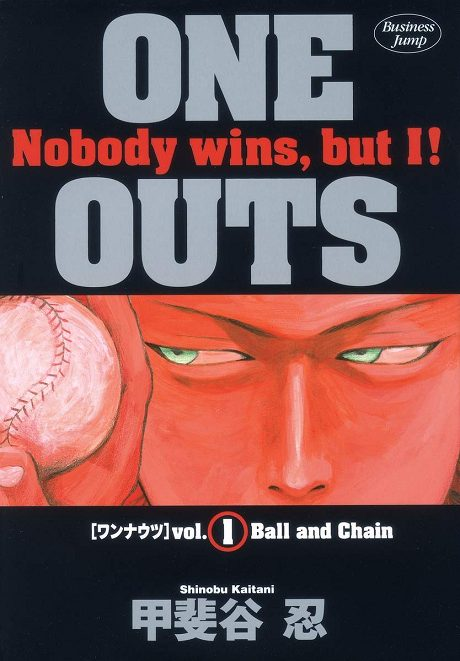

Anime
Anime
MangaOne Outs
ワンナウツ
After the anime, read the manga from Chapter 83.
8.1AniList
—Animeter
25 epEpisodes
Anime finished. Where does the manga pick up?
Start at Chapter83
The anime ends at chapter 82, the last chapter of volume 10, so start at chapter 83 (volume 11). The manga is finished.
182176 end
Season 1Start reading here